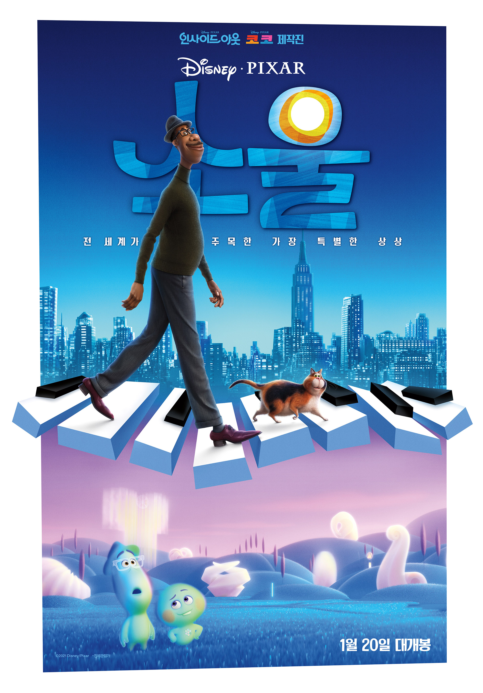

인생 영화 BEST 5
| 순위 | 제목 | 포스터 | 줄거리 | 바로가기 |
|---|---|---|---|---|
| 1 | 重慶森林 (중경삼림) | 1994년 홍콩, “내 사랑의 유통기한은 만 년으로 하고 싶다” 만우절의 이별 통보가 거짓말이길 바라며 술집을 찾은 경찰 223 고단한 하루를 보내고 술집에 들어온 금발머리의 마약밀매상 "그녀가 떠난 후 이 방의 모든 것들이 슬퍼한다" 여자친구가 남긴 이별 편지를 외면하고 있는 경찰 663 편지 속에 담긴 그의 아파트 열쇠를 손에 쥔 단골집 점원 페이 네 사람이 만들어낸 두 개의 로맨스 새로운 사랑을 만나는 방법에 대한 독특한 상상력 |
클릭 | |
| 2 | 어바웃 타임 |  |
모태솔로 팀(돔놀 글리슨)은 성인이 된 날, 아버지(빌 나이)로부터 놀랄만한 가문의 비밀을 듣게 된다. 바로 시간을 되돌릴 수 있는 능력이 있다는 것! 그것이 비록 히틀러를 죽이거나 여신과 뜨거운 사랑을 할 수는 없지만, 여자친구는 만들어 줄 순 있으리.. 꿈을 위해 런던으로 간 팀은 우연히 만난 사랑스러운 여인 메리에게 첫눈에 반하게 된다. 그녀의 사랑을 얻기 위해 자신의 특별한 능력을 마음껏 발휘하는 팀. 어설픈 대시, 어색한 웃음은 리와인드! 뜨거웠던 밤은 더욱 뜨겁게 리플레이! 꿈에 그리던 그녀와 매일매일 최고의 순간을 보낸다. 하지만 그와 그녀의 사랑이 완벽해질수록 팀을 둘러싼 주변 상황들은 미묘하게 엇갈리고, 예상치 못한 사건들이 여기저기 나타나기 시작하는데… 어떠한 순간을 다시 살게 된다면, 과연 완벽한 사랑을 이룰 수 있을까? |
클릭 |
| 3 | 覇王別姬 (패왕별희) |  |
어렸을 때부터 함께 경극을 해온 ‘두지’(장국영)와 ‘시투’(장풍의). 세상에 둘도 없는 절친한 아우와 형이지만, ‘두지’는 남몰래 ‘시투’에 대한 마음을 품고 있다. 하지만 ‘시투’는 여인 ‘주샨’(공리)에 마음을 빼앗기고, 그로 인해 ‘두지’는 감정의 소용돌이에 빠지게 되는데… 사랑과 운명, 아름다움을 뒤바꾼 화려한 막이 열린다! |
클릭 |
| 4 | 세 얼간이 |  |
‘알 이즈 웰’을 외치던 유쾌한 세 남자가 돌아왔다! 천재들만 간다는 일류 명문대 ICE, 성적과 취업만을 강요하는 학교를 발칵 뒤집어 놓은 대단한 녀석 란초! 아버지가 정해준 꿈, `공학자`가 되기 위해 정작 본인이 좋아하는 일은 포기하고 공부만하는 파파보이 파르한! 찢어지게 가난한 집, 병든 아버지와 식구들을 책임지기 위해 무조건 대기업에 취직해야만 하는 라주! 친구의 이름으로 뭉친 `세 얼간이`! 삐딱한 천재들의 진정한 꿈을 찾기 위한 세상 뒤집기 한판이 시작된다! |
클릭 |
| 5 | 소울 |  | 나는 어떻게 ‘나’로 태어나게 되었을까? 지구에 오기 전 영혼들이 머무는 ‘태어나기 전 세상’이 있다면? 뉴욕에서 음악 선생님으로 일하던 ‘조’는 꿈에 그리던 최고의 밴드와 재즈 클럽에서 연주하게 된 그 날, 예기치 못한 사고로 영혼이 되어 ‘태어나기 전 세상’에 떨어진다. 탄생 전 영혼들이 멘토와 함께 자신의 관심사를 발견하면 지구 통행증을 발급하는 ‘태어나기 전 세상’ ‘조’는 그 곳에서 유일하게 지구에 가고 싶어하지 않는 시니컬한 영혼 ‘22’의 멘토가 된다. 링컨, 간디, 테레사 수녀도 멘토되길 포기한 영혼 ‘22’ 꿈의 무대에 서려면 ‘22’의 지구 통행증이 필요한 ‘조’ 그는 다시 지구로 돌아가 꿈의 무대에 설 수 있을까? |
클릭 |